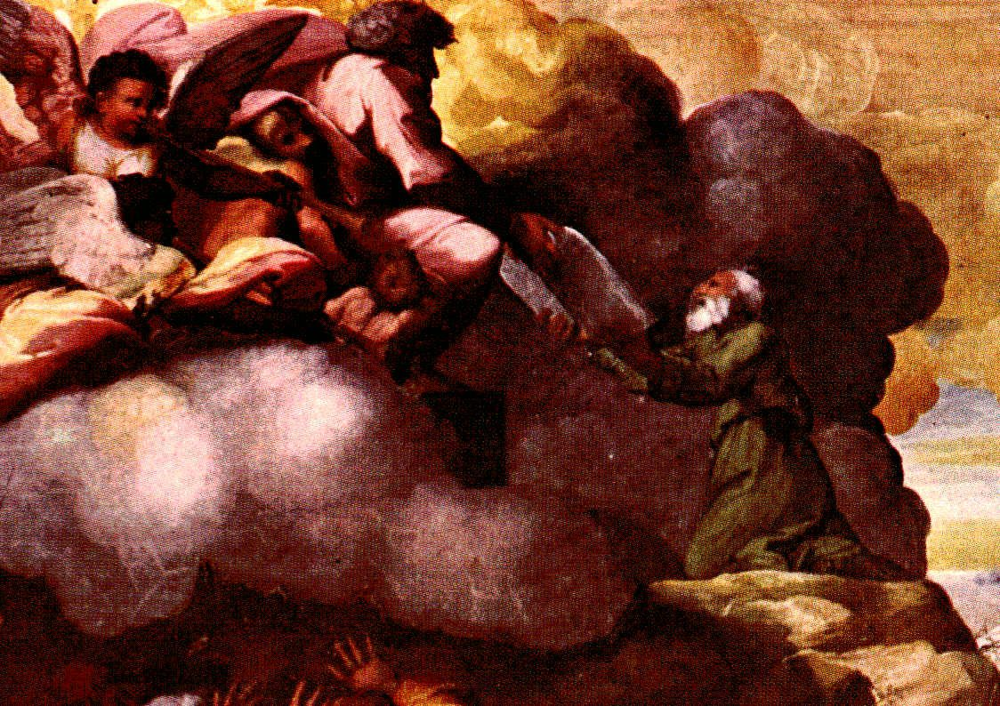

Éxodo 31 — La Traducción Mister

⚠ Rafael pinta la entrega misma, el instante exacto que nombra el último versículo de este capítulo: Moisés arrodillado en Sinaí, ambas manos extendidas hacia arriba, mientras una tabla pasa de la nube a su mano. Las figuras aladas que llenan la nube son añadido propio del pintor —el texto no nombra ningún asistente, solo «el dedo de Dios»—, pero el verdadero argumento de la composición es la MANO EXTENDIDA misma: un gesto pequeño y sencillo al que se le pide cargar el peso de todo un pacto. Pintado en 1518 para el ciclo de frescos bíblicos de la Loggia Vaticana, dos años antes de la muerte de Rafael a los treinta y siete años.
{kind=link}
El Espíritu que se cernía en la creación ahora llena a un artesano, y todo el proyecto de construcción se relee en once versículos
Bezalel es llenado del «espíritu de Dios» (v3, ruach Elohim) —la frase idéntica para el mismo Espíritu que se cernía sobre las aguas en la primerísima creación (Génesis 1:2, ya en estas páginas). El mismo poder que dio forma al mundo desde la informidad ahora habita en un solo hombre para que pueda dar forma a oro, plata, bronce, piedra, y madera en una morada para el Dios que los hizo. Bezalel también es nombrado por su genealogía completa —«hijo de Uri, hijo de Hur» (v2)—, y Hur no es un desconocido en estas páginas: es el mismo hombre que, junto con Aarón, sostuvo las manos cansadas de Moisés en Refidim para que Israel ganara la batalla contra Amalec (Éxodo 17:12, ya en estas páginas). El nieto del hombre que una vez sostuvo los brazos de un líder ahora construye la casa donde habitará el Dios de ese líder.
⚠ «Sabio de corazón» (v6, chakham-lev) es la frase exacta que Éxodo 28:3 (ya en estas páginas) ya usó para los artesanos anónimos que hacen las vestiduras de Aarón —«todos los sabios de corazón, a quienes he llenado de espíritu de sabiduría». Esa promesa anterior se amplía aquí a toda mano diestra que construya cualquier parte del tabernáculo, no solo las vestiduras. Y los vv7–11 son el capítulo leyéndose a sí mismo los cinco capítulos anteriores en miniatura: tienda, arca, cubierta, mesa, candelero, altar del incienso, altar del holocausto, fuente, vestiduras, aceite, incienso —cada objeto que Éxodo 25–30 especificó, nombrado una vez más en un solo aliento. El orden no es cronológico (el altar del incienso de Éxodo 30 se nombra antes que el altar del holocausto de Éxodo 27) sino espacial —primero el mobiliario más interior, avanzando hacia el atrio, luego las vestiduras, luego las dos recetas.
⚠ Las «vestiduras primorosamente labradas» (v10, bigdei ha-serad) son una frase genuinamente incierta, y el estante lo demuestra. La KJV adivina «los paños de servicio»; la ASV y la ESV leen ambas «las vestiduras primorosamente labradas», la lectura que sigue esta traducción; la NIV y la NASB simplifican ambas a «las vestiduras tejidas». La propia nota de Strong llama a la raíz «quizá trabajo trenzado o entretejido» —un «quizá» honesto para una palabra que ocurre solo aquí y dos veces más en Éxodo 39, todas describiendo las mismas vestiduras sin especificar.
Una tercera señal de pacto, y el verbo más extraño de todo el capítulo
El sábado se llama «una señal» (v13, ot) entre Dios e Israel —la TERCERA señal de pacto que esta traducción encuentra, después del arcoíris (Génesis 9:12-13) y la circuncisión (Génesis 17:11). Cada pacto recibe su propia marca visible: un arco en el cielo para todo ser viviente, un corte en la carne para el linaje de Abraham, un día guardado para la nación rescatada de Egipto. ⚠ Y la pena por violar esta señal es la fórmula idéntica ya fijada para violar la señal de la circuncisión: «esa alma será cortada de entre su pueblo» (v14) —la misma cláusula, casi palabra por palabra, que cerró Génesis 17:14. Dos señales distintas, una sola consecuencia compartida por romper cualquiera de las dos.
Los versículos 15 y 17 repiten el Cuarto Mandamiento casi palabra por palabra —«seis días se hará obra» y «en seis días hizo Jehová los cielos y la tierra» ya fijados ambos en Éxodo 20:9-10 (ya en estas páginas). ⚠ Pero el verbo de cierre del v17 es nuevo y sorprendente: Dios descansó «y fue REFRESCADO» (vayinafash) —el mismo verbo raro ya usado en Éxodo 23:12 (ya en estas páginas) para el buey, el asno, el esclavo, y el extranjero agotados, refrescados por ese mismo descanso semanal. La palabra no aparece en ningún otro lugar de la Torá. Dios no es meramente descrito como descansando en el séptimo día; Dios es descrito, en el mismo verbo que este libro reserva en todo lo demás para un trabajador cansado o un animal cansado, recobrando el aliento.
Una promesa de siete capítulos atrás, finalmente cumplida
«Te daré las tablas de piedra… que he escrito» —las propias palabras de Jehová a Moisés en Éxodo 24:12 (ya en estas páginas), dichas antes de que se diera un solo versículo de instrucción del tabernáculo. Todo lo sucedido desde entonces —el arca, la mesa, el candelero, la tienda, el altar, el atrio, las vestiduras del sacerdocio, la ordenación, el altar del incienso, el censo, la fuente, el aceite de la unción, el incienso, y ahora el nombramiento de los artesanos que lo construirán todo— se ha desplegado dentro de una sola frase suspendida, Moisés todavía de pie en el monte esperando lo que se le prometió siete capítulos atrás. Este versículo es donde esa frase finalmente se cierra: le entrega las tablas.
⚠ Están escritas «con el dedo de Dios» —el mismo modismo que los propios magos del Faraón se vieron obligados a usar sobre la plaga de piojos que no pudieron reproducir (Éxodo 8:15, ya en estas páginas). La misma pequeña frase para que Dios actúe directamente, sin instrumento ni esfuerzo, arrancada primero como una confesión involuntaria de los propios hechiceros de Egipto, ahora nombra la escritura de la propia ley del pacto de Israel. Y el capítulo termina ahí, sin espacio de párrafo escriba alguno —a diferencia de cada otra sección de esta instrucción, la historia no se detiene para que el lector se ponga al día. Sigue corriendo.
Notas sobre esta traducción
Decisiones. «Vestiduras primorosamente labradas» para bigdei ha-serad (v10) —una frase genuinamente incierta; véase la nota anterior para el desglose completo del estante. «Señal» mantenido para ot (vv13, 17), igualando las entradas del arcoíris y la circuncisión ya en estas páginas, en vez de variar el español entre tres pactos que comparten una sola palabra hebrea. «Refrescado» mantenido literal para vayinafash (v17) en vez de fundirlo en «descansó» —véase la nota anterior para por qué importa la distinción. Los dos espacios de párrafo propios del capítulo ({פ} en v11, {ס} en v17) marcan exactamente la costura entre los artesanos y el mandamiento del sábado; el v18 no lleva ninguno, corriendo directo hacia el siguiente capítulo sin pausa. La numeración de versículos sigue exactamente el hebreo; el hebreo y el español de Éxodo 31 corren igual, 1–18.
Una nota sobre el orden: Éxodo está en estas páginas en los capítulos 1–40 —toda la instrucción del tabernáculo, comenzada en Éxodo 25, está ahora completa, sus artesanos nombrados, su sábado ordenado, y sus tablas prometidas entregadas. Éxodo 32, el becerro de oro y la intercesión de Moisés, y Éxodo 33, el ruego de Moisés por ver la gloria de Jehová y su vislumbre de las espaldas de Dios desde la hendidura de la peña, y Éxodo 34, el pacto rehecho y el propio rostro de Moisés dejado resplandeciente, y Éxodo 35, los propios regalos del pueblo para el tabernáculo por fin presentados, y Éxodo 36, los artesanos en su labor y la generosidad del pueblo por fin contenida, y Éxodo 37, el arca y la mesa y el candelabro por fin construidos, y Éxodo 38, el altar de bronce y el atrio construidos por fin, y Éxodo 39, las vestiduras sacerdotales por fin cosidas, ya están en estas páginas también. Éxodo 40 —el tabernáculo levantado y la gloria de Jehová llenándolo, el último capítulo del propio libro— ya está también en estas páginas. Éxodo queda completo aquí, los cuarenta capítulos; la historia continúa en Levítico, ya comenzado en estas páginas.